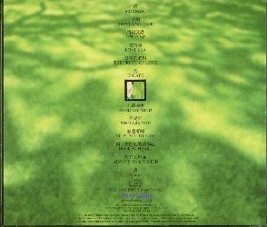

- 晨 MORNING
- 手語 SING LANGUAGE
- 将錯就錯 LET IT BE
- 愛情海 LOVE SEA
- 愛情的眞相 THE TRUTH OF LOVE
- 逃 ESCAPE
- 心電感應 READ MY MIND
- （イ尓）是誰 WHO ARE YOU
- 無處可藏 NO PLACE TO HIDE
- 傷了（イ尓）的心的我傷心 BROKEN HEART
- 放在心裡面 ALWAYS ON MY MIND
- 夜 NIGHT
オール新曲と思います。
| 前のＣＤ | タイトル一覧 | 次のＣＤ |
| １９９６年 | 心言手語 | ＳＤＤ９５０１ |
|---|---|---|
|
| 新力音楽（Sony Music） | |
| ||
|  |
このアルバムは、グリーンで統一されています。 オール新曲と思います。 | |